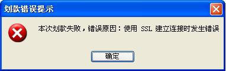
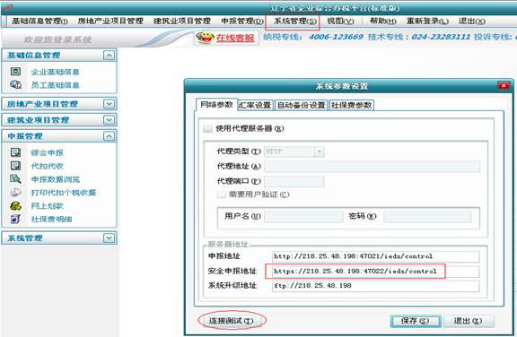
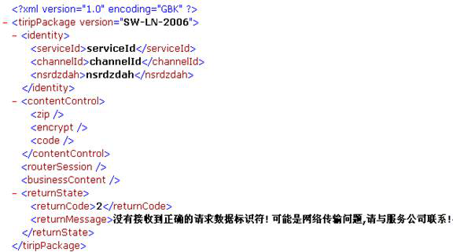

- 问题：用户在使用办税通报税时，上传申报数据或划款时提示“使用SSL建立连接时发生错误”,如下图示。

- 可能由以下原因引起：
- 1、输入密码等待超时；
- 解决办法：提示输入证书密码时，要尽快输入并点击确定（一般为10秒之内）。
- 2、在使用证书过程中，若证书因连续输入错误的密码，达到一定次数后而被锁定后，在报税平台中有时也会提示“SSL建立连接失败”的提示；
- 解决办法：如数字证书被锁定，需要到当地服务中心办理解锁，然后再进行报税。
- 3、其他情况
- 解决办法：此种情况需要逐步对问题进行排查。
- 第一步，首先确定申报服务器是否正常，可在报税软件里系统参数里进行”连接测试”，

- 第二步，如果正常，可以在插KEY的情况下，访问以下网址
https://218.25.48.198:47022/ieds/control（该网址可在软件的系统参数中找到，注意是https），
- 弹出选择证书窗口，点确定后，可能会出现以下界面

- 如果出现以上界面，而申报或划款时仍有“SSL建立连接失败”的错误提示，很可能是KEY在制作过程中出现问题。
- 此时可以到IE中查看证书，将加密证书删除，即可成功申报或划款。
- 但需要用户在本月报税结束后，携带UKEY和相关证明文件（如加盖公章的营业执照复印件）
- 到当服务中心进行验KEY，更新等工作，否则以后报税仍有此问题出现。